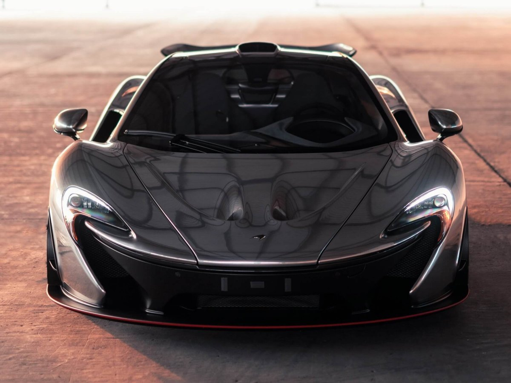

.png)
.png)
Автомобиль прогресса. Опыт для чувств. 𝕸𝖈𝖑𝖆𝖗𝖊𝖓 𝖕1 готов занять место в представительском классе.
.png)
Инженеры 𝕸𝖈𝖑𝖆𝖗𝖊𝖓 используют более 1000 километров силовых и управляющих кабелей, проложенных по всему зданию Технологического центра, и более 40 километров водных трубопроводов. Каждый час через кондиционеры проходит около миллиона кубометров воздуха.
Минималистичный интерьер полностью изготовлен из карбона, кроме гоночных кресел ковшеобразной формы – здесь применяется титановый каркас и обивка алькантарой. Приборная панель лишена традиционных циферблатов – вместо них установлены три плазменных дисплея, на которые выводится вся информация о скорости, оборотах двигателя и так далее.
Автомобиль оснащается гибридной установкой из 3,8-литрового битурбобензинового двигателя массой около 200 кг, электромотора и блока аккумуляторных батарей, расположенных позади салона. На батареях, масса которых составляет 96 килограммов, P1 может проехать до 10 километров. Кроме того, электромотор имеет системы рекуперативного торможения KERS, подзаряжающую батареи, и Instant Power Assist, позволяющую получить всю мощность электродвигателя мгновенно. Для обычной зарядки аккумуляторов через обычную розетку нужно 2 часа, а на специальных станциях большую часть заряда можно получить уже через 10 минут подзарядки. В качестве трансмиссии используется 7-ступенчатая роботизированная коробка передач. Разгон до 100 км/ч — 2,8 с Разгон до 200 км/ч — 6,8 с Разгон до 300 км/ч — 16,5 с
Для максимального снижения веса интерьер P1 лишён шумоизоляции и изготовлен из углеволокна. Сиденья расположены как можно ближе к друг другу для большей концентрации массы, регулировки их расположения задаются заранее и впоследствии могут быть изменены только у дилера. Информацию водитель получает от трёх TFT-дисплеев — один 6,8-дюймовый посередине и 2 поменьше слегка позади. Из систем безопасности автомобиль имеет электронный контроль устойчивости и систему контроля тяги. В отличие от предшественника, P1 имеет 2 сидения, а не три, а разгон до 300 км/ч он выполняет на 5 секунд быстрее; концепт автомобиля почти не отличался от серийной версии. Светодиодные фары автомобиля выполнены в виде значка компании. Кроме того, автомобиль имеет небольшой багажник спереди.
.png)
.png)